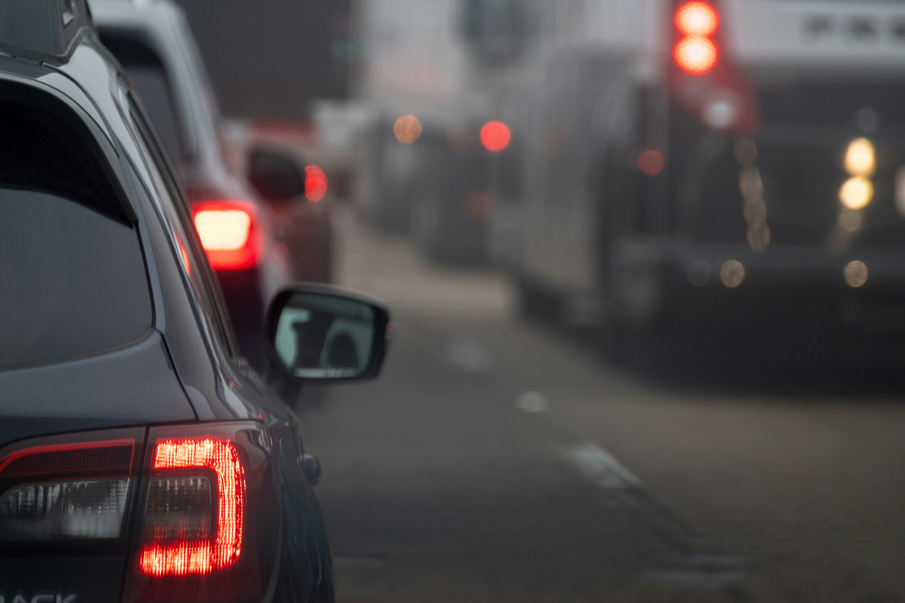

Wisconsin’s most populous counties continue to experience a high rate of impaired driving crashes, based on the most recent data from 2022. Impaired driving includes operating a vehicle under the influence of alcohol or drugs.
While Milwaukee County ranked highest in the total number of impaired driving crashes with 1,240 crashes, those crashes only made up 4.8% of the total crashes.
In contrast, impaired driving accounted for 6.85% of the traffic crashes in Brown County and 7.16% of the crashes in Dane County.
The issue of impaired driving has been receiving increased attention in Dane County, where alcohol-related crashes made up 5.16% of the total crashes. About 2.4% of those crashes involved at least one fatality.
Sergeant Jason Russell, who leads the Dane County Sheriff’s Office traffic unit, says that Wisconsin’s lenient drunk driving laws are also a contributing factor. Unlike other states, a first OWI offense in Wisconsin is a civil forfeiture, not a criminal violation.
Russell also noted the steps Dane County is taking to reduce impaired driving, including grants focusing on OWI enforcement as well as tracking the “place of last drink,” during traffic stops where alcohol use is suspected.
He believes that businesses can also help reduce the number of drivers impaired by alcohol, citing an example from his time working third shift, where he worked with an establishment that had a pattern of high calls for services and drunk driving in the area.
“The owner actually took ownership and made changes and reduced the number of crashes and calls for service in that area.”
The Dane County Sheriff also hands out flyers to drivers who receive OWI citations, explaining the traffic statistics and their contributing factors, emphasizing the importance of education in addition to enforcement.
When it comes to safe driving, Russell believes it's important to slow down, avoid driving after drinking too much alcohol or taking drugs, and don’t look at your phone when you’re behind the wheel.
“Impaired driving affects everyone,” Russell said, noting that most people in Dane County either know someone hurt in an OWI crash or could have received an OWI ticket themselves. “Everyone has been touched by an impaired driver one way or another.”